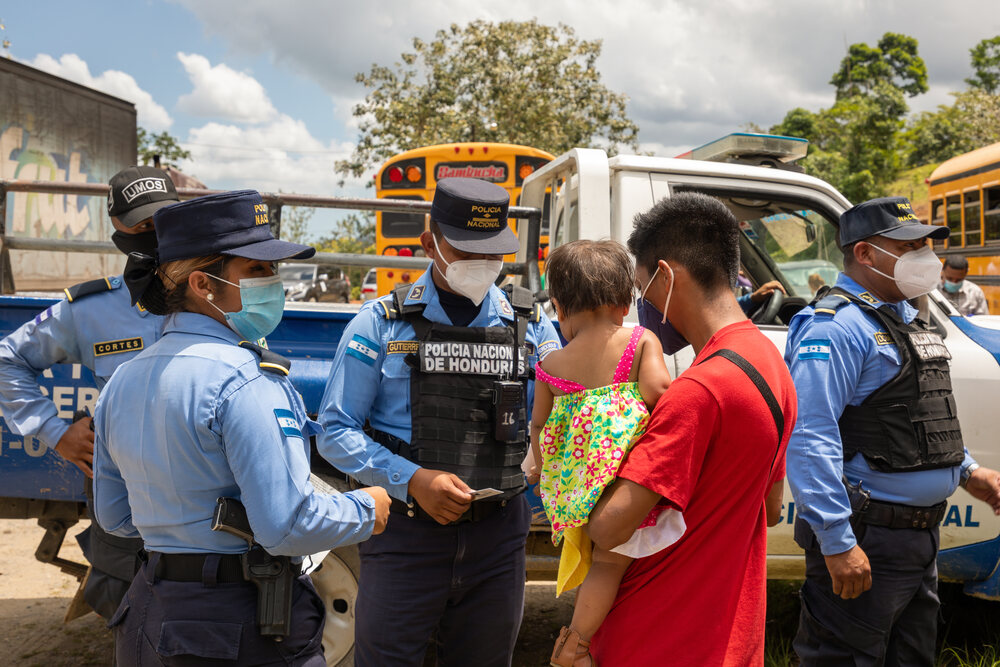

LA VIOLENCIA, EL CLIMA,
LA INSEGURIDAD ALIMENTARIA,
Y LAS POLÍTICAS PÚBLICAS
HAN IMPULSADO LA MIGRACIÓN HISTORICAMENTE
HAGA CLIC AQUÍ PARA SABER MÁS
LA INSEGURIDAD
FINANCIERA
IMPULSA
LA MIGRACIÓN
HAGA CLIC AQUÍ PARA SABER MÁS
LA MITAD DE LOS MIGRANTES
TRABAJAN EN LA
MISMA OCUPACIÓN
EN SU DESTINO FINAL
HAGA CLIC AQUÍ PARA SABER MÁS
SÓLO UN 57%
DE LOS MIGRANTES
RESIDEN EN EL
DESTINO
DESEADO
HAGA CLIC AQUÍ PARA SABER MÁS
LOS COSTOS DE
MIGRACIÓN
REPRESENTAN UNA
CARGA FINANCIERA
ADICIONAL
Desplázate Hacia Abajo para Saber Más
UN MIGRANTE
De El Salvador Gastó
$8,500
a través de Mecanismos Irregulares por Cuenta Propia o en Caravana
Los Migrantes Gastaron $2.2 Mil Millones de Dólares
para migrar de Centroamérica a Estados Unidos en el último año.
Cada círculo representa Un Migrante viajando a EE.UU. desde El Salvador, Guatemala o Honduras.
Los colores distinguen el mecanismo de migración en el viaje de cada migrante.
Mecanismo Regular
Irregular con Traficante o Coyote
Irregular por Cuenta Propia o en Caravana

El Departamento de Seguridad Nacional(DHS) de Estados Unidos Gastó $2.9 Mil Millones de Dólares
en 2018 deteniendo a salvadoreños, guatemaltecos y hondureños en la frontera suroeste.*

Los Migrantes Gastaron Tanto como los Gobiernos
Nuestro estudio encontró que en 2020, los migrantes gastaron colectivamente para migrar cerca de lo que sus gobiernos gastaron en educación primaria.*
Los Costos de la Migración Irregular son Altos en Términos de Riesgos y Financieros
Los mecanismos irregulares, que incluyen la migración con la ayuda de un traficante o coyote y por cuenta propia o en Caravana, constituyen el 80% de las rutas de migración a los EE. UU. desde El Salvador, Guatemala, pero el 89% del costo total según los encuestados. Estas vías son extremadamente peligrosas y muchas no llegan a su destino deseado.
La Migración con Traficante o Coyote es la más Cara
Las estimaciones muestran que a los migrantes de Centroamérica les costó un total de $1.7 mil millones de dólares en 2020 viajar con un traficante o coyote a los Estados Unidos. Los migrantes usan traficantes porque los protegen en el viaje, pero a menudo usan rutas de narcotráfico y sobornos a lo largo del camino para hacer que los migrantes crucen la frontera.

La Migración por Cuenta Propia (Comúnmente con Caravanas) a Menudo Cuesta Menos
Los migrantes que optaron por viajar irregularmente por su cuenta (principalmente desde Honduras) gastaron menos para migrar; viajar en grupo los protege. El costo promedio para migrar a los EE. UU. Es de $2,900 por cuenta propia o con una caravana, y de $7,500 con un traficante o coyote.
La Migración por Mecanismos Regulares Reduce los Costos
1 de cada 5 (19%) migrantes que se dirigían a cualquier destino utilizaba vías migratorias regulares, incluidas visas de turista, estudiante y trabajador agrícola. Esto reduce el costo para los migrantes y también ayuda a reducir los costos de detenciones en la frontera.
Los Migrantes Terminan con una Deuda Significativa
Los migrantes a menudo reciben ayuda de familiares y amigos, utilizan ahorros personales y / u obtienen préstamos bancarios o personales para costear el viaje. Los encuestados de hogares con migrantes informaron que el 41% de los migrantes recientes que se dirigían a cualquier destino financiaban su viaje con el apoyo de familiares y amigos. Un 19% adicional pagó los costos de migración con sus propios ahorros y el 18% usó préstamos de instituciones financieras.

Ampliar las Vías Legales para los Centroamericanos Interesados en Migrar a los Estados Unidos
Los esfuerzos coordinados para aumentar el acceso a visas de empleo temporal, por ejemplo, podrían ayudar a satisfacer la demanda de oportunidades de empleo. Cambiar incluso una fracción de la migración irregular a los mecanismos regulares, disminuiría los $1.7 mil millones de dólares que los centroamericanos gastan anualmente en la migración irregular con un traficante a los EE. UU., y, en cambio, aumentarían los ingresos estatales, por ejemplo, a través de tarifas de solicitud de visas razonables, que posteriormente pueden invertirse en iniciativas para aproximarse a otros impulsores de la migración irregular.
TRAZANDO UN
NUEVO RUMBO
REGIONAL
HAGA CLIC AQUÍ PARA SABER MÁS